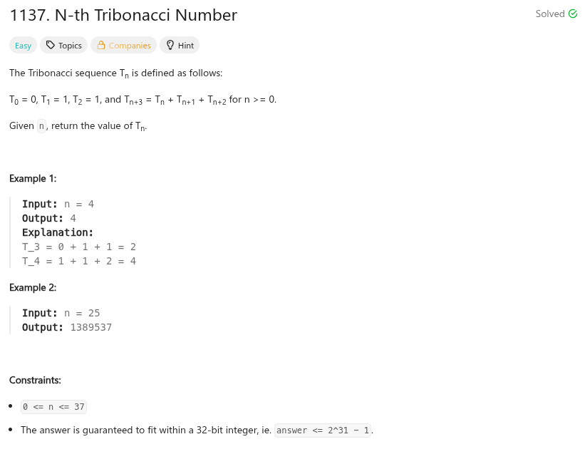

參考資訊：
https://www.cnblogs.com/grandyang/p/14864666.html
題目：

int tribonacci(int n)
{
int c0 = 0;
int c1 = 1;
int c2 = 1;
int cc = 0;
if (n < 2) {
return n;
}
for (cc = 2; cc < n; cc++) {
int t = c0;
c0 = c1;
c1 = c2;
c2 = t + c0 + c1;
}
return c2;
}